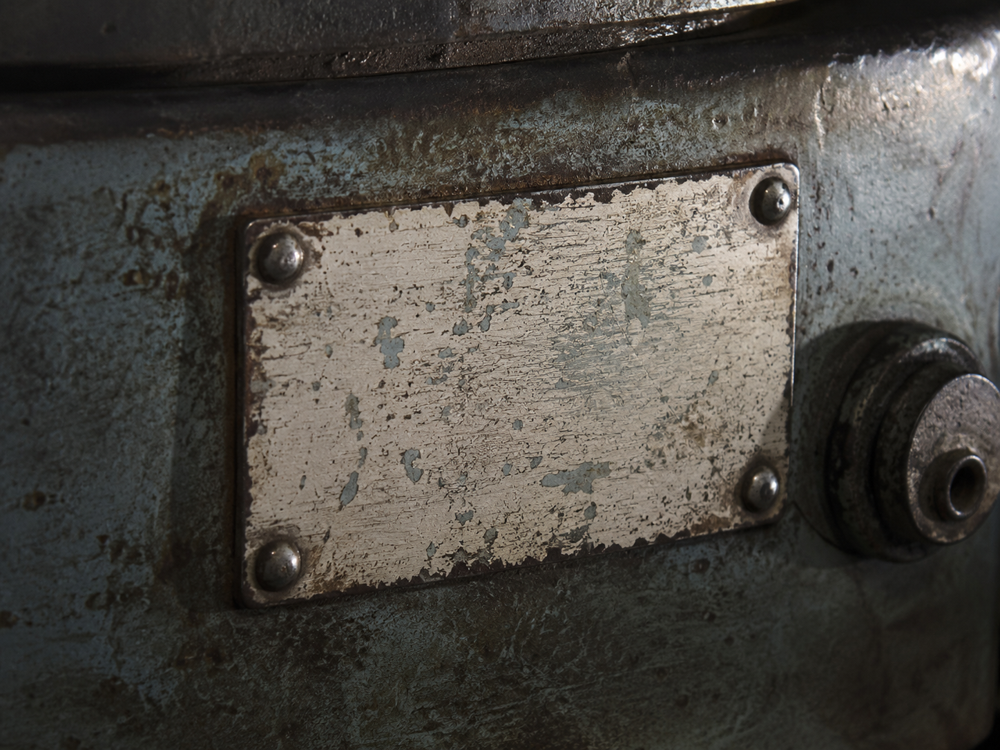

·································· · D E S C E N T · 33 / 40 · ··································

That was the whole of it. Care.
Prediction, bent toward someone, gently.
Then greed found the same trick and renamed it.
8 . . . . . . . . 7 . . . . . . . . 6 . . . . . R . . 5 . . . . . . . O 4 . . . . . . . . 3 . C . . . . S . 2 . . . . R . . . 1 ♞ . U . . . . . a b c d e f g h